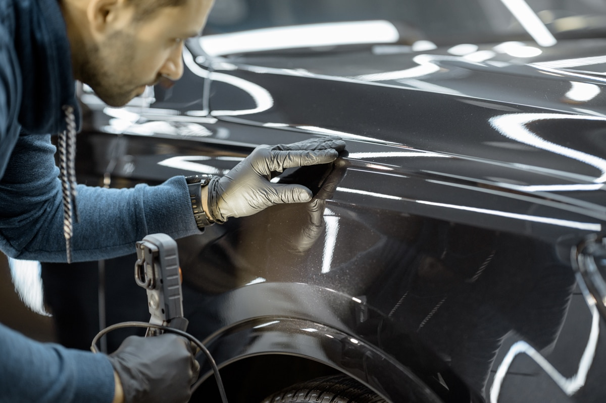
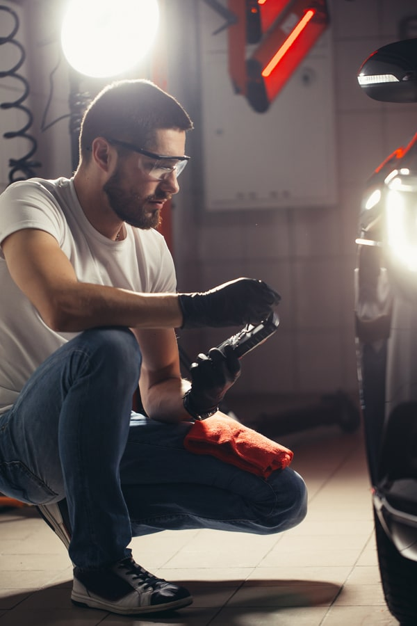
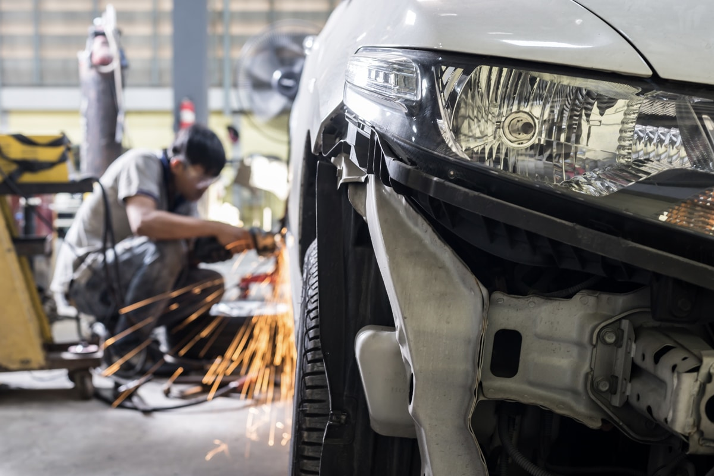

The free estimate
It all starts with a free estimate. You can request one online or give us a call at (215) 322-5350.
Staging build. Not the live site. The shop's live site is at tricountycollision.com

Southampton, PA
When you've been in a collision, the last thing you want is to deal with a faceless, impersonal repair chain. At Tri-County Collision, we understand that your vehicle isn't just transportation, it's part of your life.
What we do, in the order we do it
We've refined our collision repair process over years of experience to make sure you get back on the road with confidence.
It all starts with a free estimate. You can request one online or give us a call at (215) 322-5350.
Once you're ready to move forward, we take care of the insurance coordination so you're not juggling calls with adjusters.
Our team performs a thorough damage assessment and creates a detailed repair plan that we walk you through.
Using state-of-the-art equipment and factory-certified techniques, our ASE/I-CAR® Gold technicians perform precision repairs to manufacturer standards.
After the structural and cosmetic work is complete, we don't just hand you the keys; we run a full quality control inspection to ensure everything meets our standards.
Then comes the detail: we thoroughly clean the interior and exterior, making your vehicle look as good as it runs. Finally, we walk through the finished work with you, answer any questions, and make sure you're completely satisfied.
From start to finish, we handle the heavy lifting so you can focus on getting back to your life.
Two kinds of damage, one shop

Not every accident is catastrophic. Scratches, scuffs, small dents, bumper damage, and fender benders happen. They're a normal part of driving, especially around the busy neighborhoods of Bucks and Montgomery County.
The good news is that minor damage doesn't have to mean weeks in the shop. We specialize in getting you back on the road quickly without cutting corners on quality. For qualifying dents, we offer paintless dent repair (PDR), which removes minor dings without repainting, saving you time and money. Even if PDR isn't the right fit, our technicians can blend repairs seamlessly so there's no trace of the damage.
Here's the thing many drivers don't realize: even minor damage deserves prompt repair. Small paint chips can lead to rust over time, dents affect resale value, and unaddressed damage can escalate. We recommend getting an estimate even for what seems like minor damage. It's free, and peace of mind is priceless. Call us at (215) 322-5350 to discuss your minor collision damage, or request a free estimate online.

Serious collisions demand serious expertise. When frame straightening, structural repair, and full panel replacement are needed, you need technicians who've seen it all and know exactly how to handle it.
That's where our ASE/I-CAR® Gold certified team comes in. These certifications aren't handed out lightly. They represent hundreds of hours of training, rigorous testing, and a commitment to staying current with the latest repair techniques. We're factory-certified for 12 vehicle brands: Honda, Nissan, Hyundai, Kia, Subaru, Ford, Jeep, Acura, GM, Dodge, Chrysler, and INFINITI. That means we have direct access to manufacturer repair procedures, tooling, and specifications for your specific vehicle.
When we repair your vehicle, we use OEM (original equipment manufacturer) parts whenever possible. The same parts that came on your car when it rolled off the factory line. Why does this matter? Because your vehicle's structural integrity, safety systems, and resale value depend on it. We always follow manufacturer specifications to the letter.
We also perform ADAS recalibration whenever a repair calls for it. Structural work is the obvious case, but a replaced windshield or a repaired bumper can disturb the sensors behind it too. Recalibration ensures your vehicle's advanced safety systems, like lane departure warnings and automatic braking, work the way the manufacturer intended. We use state-of-the-art equipment in our facility and environmentally friendly products throughout the repair process because we care about doing things right. And backing all of this is our lifetime warranty on repair work. Major damage is stressful, but knowing you're in expert hands should give you peace of mind.
The moments right after a collision can feel chaotic
We talk to the adjuster so you do not have to
Insurance claims can feel overwhelming. Between adjusters, estimates, authorizations, and timelines, there's a lot to juggle. That's where we come in. We work with all major insurance companies. We have direct repair relationships with them, which means we speak their language and know how to navigate their processes. When you bring your vehicle to us, we handle the claims process so you don't have to. We'll communicate directly with your insurance adjuster, provide detailed repair estimates, and keep your insurer updated throughout the process. And here's something important: we'll advocate on your behalf for proper repairs. If we believe your vehicle needs more extensive work than what the adjuster initially approved, we'll make the case and fight for your vehicle to be restored correctly. You have a voice in this process, and we make sure it's heard.
Remember, Pennsylvania law gives you the right to choose your own collision repair shop. Your insurer cannot steer you to their preferred vendor or demand you use a specific facility. This is your vehicle and your choice. We're here to make that choice easy. Get a free estimate by calling (215) 322-5350 or requesting one online. We'll walk you through everything.
In their words, not ours
This center was great compared to previous experiences with other centers that work with Nationwide. The were great about sending e-mail updates regarding everything. That is very nice. Kevin Bliss is the person we worked with. The work has also been great. They were upfront about how they do the estimate and told us it was possible that when they started the work it was possible they would find more that needed to be fixed. I appreciate that they were accurate about setting expectations and updating quickly when those expectations changed.
Unfortunately, have been there several times. People keep running into my car. They have always been very good and making the unpleasant experience of getting your car repaired pleasant. They make rental pick up easy. They keep you informed and deliver your car when they say they will. Barry is the best.
I own an HVAC business and when my 2015 Transit 250 was rear ended I took it to tri county, they understood how important it was for me to have my van back fast, they did an awesome job making the repairs and extremely fast. I picked my van up and it was also very clean, felt like the day I bought it. I recommend you take your vehicle to tri county.
These guys did an amazing job on my 2017 charger hellcat. I was rear ended 😭 Victor fought with my insurance company they wanted a bullish blend paint job tri county said no and that's not how we do business.. We will be recommending them to our customers as well as they will be our go to body shop. If you want your car done right no over seas parts check them out.. My car is like new 😊 Thanks guys.
Twelve manufacturers, and the procedures that come with them
When you buy a new vehicle, it comes with a manufacturer's warranty. That warranty covers repairs performed at certified facilities using proper techniques and parts. Our shop is factory-certified for 12 vehicle brands: INFINITI, Nissan, Hyundai, Kia, Acura, Honda, GM, Chrysler, Ford, Dodge, Subaru, and Jeep. What does factory certification actually mean? It means our technicians have completed manufacturer-specific training, we have access to OEM repair procedures and technical bulletins, and we have the proper diagnostic equipment to work on your vehicle correctly. Every repair we perform follows manufacturer specifications exactly. No shortcuts, no guessing.
Why does this matter to you? Because factory certification ensures three critical things:
Your vehicle's warranty protection isn't compromised.
Your vehicle's safety systems work exactly as designed.
Your vehicle's resale value is protected.
When you choose a factory-certified collision center, you're choosing peace of mind. You're choosing expertise. You're choosing a shop that takes your vehicle as seriously as you do.
You are choosing who cares for your vehicle during a stressful time
Located at 995 Jaymor Rd in Southampton, PA, we're ideally positioned to serve the greater Bucks County and Montgomery County areas. Our shop has built its reputation on consistent quality and personal service, which is why drivers throughout the region trust us with their vehicles. We proudly serve Southampton, Warminster, Feasterville-Trevose, Bensalem, Huntingdon Valley, Hatboro, Horsham, Willow Grove, Jenkintown, Richboro, Langhorne, Doylestown, Warrington, Newtown, Churchville, Northeast Philadelphia, and more. Whether you're just down the road or a bit further out, we're conveniently accessible from all major routes. When you come in for a free estimate or to have your vehicle repaired, you'll experience the kind of service that keeps customers coming back.
One phone number, one email address, one shop
Monday to Friday, 8 a.m. to 6 p.m.
Saturday by appointment only
Estimates are free. Call (215) 322-5350 or email contact@tricountycollision.com.
The questions drivers actually call and ask
How long collision repair takes depends on the severity of the damage. Minor repairs, like small dents, scratches, or bumper damage, typically take 2 to 5 days. Major structural work, frame straightening, or extensive panel replacement can take 2 to 4 weeks. We provide a detailed timeline estimate upfront so you know exactly what to expect. Throughout the repair process, we keep you updated on progress. And if your insurance provides for a loaner or rental car, we'll coordinate that with them to minimize the impact on your life.
Yes, your car will look the same after collision repair, and that is our standard. Our ASE/I-CAR® Gold certified technicians are trained to factory specifications and have the expertise to restore your vehicle to its pre-accident condition. We use computerized color matching to ensure paint blends perfectly. We source OEM parts whenever possible to maintain your vehicle's integrity. And behind all of this is our lifetime warranty. If anything isn't right, we'll make it right. When you drive away from our shop, no one will know your vehicle was ever in an accident.
We work with all major insurance companies. We have direct repair relationships with them, so we communicate with adjusters on your behalf. We handle all the paperwork, coordinate authorizations, and keep your insurer updated on repair progress. We'll also advocate for you if we believe your vehicle needs more extensive repairs than initially approved. You don't need to navigate the claims process alone, we've got you covered.
Repair costs vary significantly based on the extent of damage. That's why we offer free estimates. There's no obligation and no surprises. You can request an estimate online or call us at (215) 322-5350. If your vehicle is covered by insurance, your policy typically covers most repair costs minus your deductible. We provide transparent pricing with no hidden fees. We'll walk you through the estimate and answer any questions about the repair process and costs.
Yes, Pennsylvania law protects your right to choose your own collision shop for repairs. Your insurance company cannot require you to use their preferred facility or steer you elsewhere. This is an important consumer right. When you choose Tri-County Collision, you're choosing based on our reputation, expertise, and commitment to quality. Not because your insurer told you to. Learn more about your right to choose by reading our blog post on the topic.
Our technicians are ASE (Automotive Service Excellence) and I-CAR® Gold Class certified, the highest level of collision repair certification in the industry. These certifications require extensive training, hands-on experience, and rigorous testing. We also maintain factory certifications from the vehicle manufacturers we service, which ensures we stay current with the latest repair techniques and have access to manufacturer-specific procedures and tooling. When you bring your vehicle to us, you're working with some of the most qualified collision repair professionals in the region.
As a factory-certified collision center for 12+ vehicle brands, we prioritize OEM (original equipment manufacturer) parts. These are the same parts that came on your vehicle when it rolled off the factory line, and they're engineered to match your vehicle's exact specifications. If a part is unavailable or if aftermarket parts are more appropriate for a specific repair, we'll discuss the options with you and advocate with your insurance company for the best solution. You always have the final say in what parts are used on your vehicle.